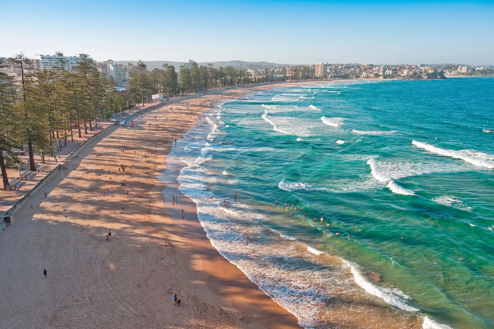

Manly Beach
Sydney, Australie · surf, bodyboard, baignade, paddle, snorkeling

La plage de surf historique de Sydney, à vingt minutes de ferry du centre. Vagues régulières, sauveteurs présents, et une réserve marine à l'extrémité nord.
- Lieu
- Sydney, Australie
- Niveau
- Débutant
- Activités
- surf, bodyboard, baignade, paddle, snorkeling
- Type d'eau
- Mer / océan
- Coordonnées
- -33.80, 151.29 (position approximative du secteur)
Dangers à connaître
- Très fréquentée, zones de baignade et de surf séparées.
- Courants de retour signalés par les drapeaux.
- Soleil très fort, indice UV élevé.
Le conseil d'Ocean Buddy
Surfe en dehors des drapeaux rouges et jaunes : ces couloirs sont réservés aux nageurs.
Ouvrir dans Ocean Buddy Télécharger sur l'App Store
Source : Description historique Ocean Buddy · vérification externe en attente.